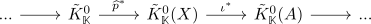

long exact sequence of topological k-theory
Proposition
Let $X$ be compact hausdorff, $A \subseteq X$ closed. Then relative topological k-theory admdits a long exact sequence for

Proof
Let $[E] \in \mathrm{ker}(\iota^*)$ be an element (cf. element in topological k0 as vector bundle; write an element as bundle minus free part ; then quotient out the free part )
Then
\begin{align*}
E_{\vert A} \simeq A \times \mathbb{K}^n \rightarrow \mathbb{K}^n
\end{align*}
with $\varphi: E_{\vert A} \rightarrow A \times \mathbb{K}^n$ as isomorphism.
Define for $e,f \in E$ the equivalence relation
\begin{align*}
e \sim f \Leftrightarrow p(f) = p(e) \in A, q(\varphi^{-1}(e)) = q(\varphi^{-1}(f))
\end{align*}